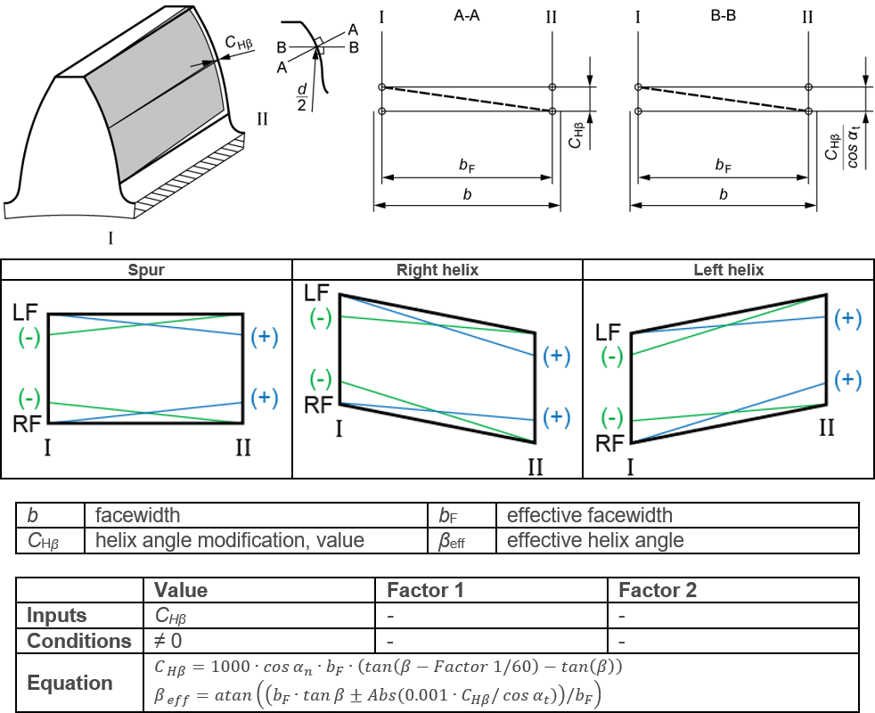

|
|
|


螺旋角修形，锥形
图（参见图 15.48）显示了齿向线图中定义的锥形螺旋角修形。图中还显示了 值 设置。该修形应用于齿轮的有效齿宽。
螺旋角修形的设置方式与线性端部修形类似（参见"齿端修形，线性，侧面 I 和 II"章）。但区别在于，螺旋角修形应用于齿轮的整个有效齿宽。

图 15.48：锥形螺旋角修形
Helix angle modification, conical
Figure (see Figure 15.48) shows the conical helix angle modification as defined in the flank line diagram. The Value setting is also shown in this figure. The modification is applied over the effective facewidth of the gear.
The helix angle modification is set as a linear end relief, in a similar way (see chapter End relief, linear, sides I and II). The difference is, however, that the helix angle modification is applied across the entire effective facewidth of the gear.
Figure 15.48: Conical helix angle modification